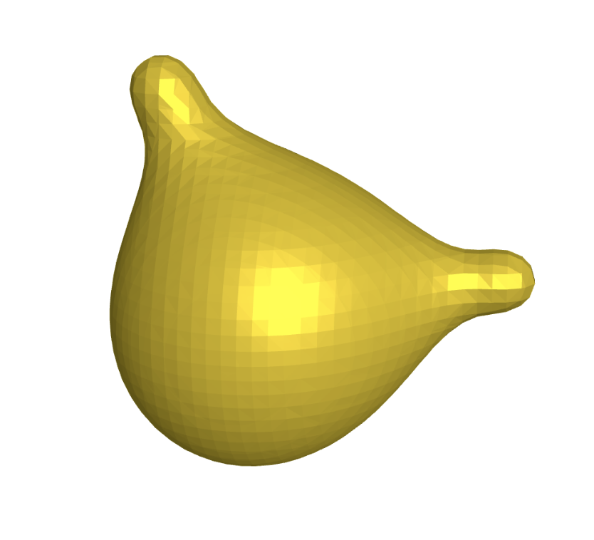

SASA in numpy
Gist here
The solvent-exposed surface area of a molecule is a simplification of how much water an atom can touch in a given conformation. It's simplified because water is made of discrete particles rather than a continuum (example of why this matters), but the simplification has a nice linear correlation to the hydrophobic effect (link).
The Shrake-Rupley algorithm is an approximation to this simplification, and works by counting the number of points on the surface of a sphere (representing an atom) that are not covered by any other atom. This could work for the VdW surface, too, but in this case the atom radii are expanded by, usually, 1.4 Å, corresponding to the approximate radius of a water molecule. This works well because hydrogens are small with respect to an oxygen atom, so water is kind of a sphere:

Despite all these simplifications and approximations, SASA via Shrake-Rupley is a useful tool. I wanted a way to calculate it without dependencies. So this is an example of calculating it in numpy. The results line up well with other libraries commonly used for SASA calculation: